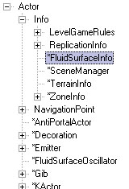
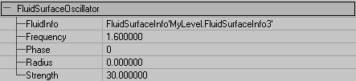
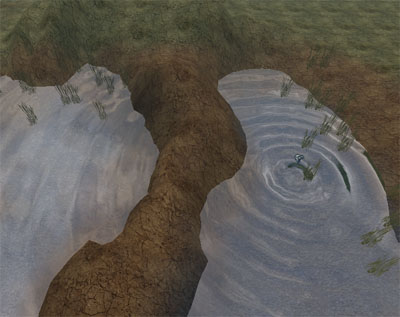

UDN
Search public documentation:
FluidSurfaceTutorial
日本語訳
한국어
Interested in the Unreal Engine?
Visit the Unreal Technology site.
Looking for jobs and company info?
Check out the Epic games site.
Questions about support via UDN?
Contact the UDN Staff
한국어
Interested in the Unreal Engine?
Visit the Unreal Technology site.
Looking for jobs and company info?
Check out the Epic games site.
Questions about support via UDN?
Contact the UDN Staff
Fluid Surface Tutorial
Document Summary: A guide and reference to setting up Fluid Surface Infos. Document Changelog: Last Edited by James Golding.Overview
Build 927 has a simple fluid-surface grid simulator effect. This is a brief overview of how to use it.Getting Started
First, create yourself a hole to put your fluid in. FluidSurfaceInfo's are always rectangles along world X and Y (you can't rotate them). There is currently no LOD for fluid surfaces, so its really only suitable for small pools etc. My empty pool looks like this:
Creating FluidSurfaceInfo
In the Actor browser, find the FluidSurfaceInfo class, under Info:
Select this class, right click in your empty pool, and choose 'Add FluidSurfaceInfo Here'. This shouold create a fluid surface using its default settings. This is a 32x32 hexagonal mesh grid, with a grid spacing of 32 Unreal units. Double-click on the fluid surface actor to bring up its properties. Here are the defaults:
Configuring The Fluid Surface
Here is an overview of what all those options mean. Some are explained in more detail later.| AlphaCurveScale | Ratio between curvature of fluid at vertex, and resultant alpha at that vertex. |
| AlphaHeightScale | Ratio between height of fluid at vertex, and resultant alpha at that vertex. Summed with alpha due to curvature. |
| AlphaMax | Maximum alpha of fluid vertex. |
| bShowBoundingBox | Display bounding box of water. |
| ClampTerrain | Terrain to check against when 'clamping' fluid vertices. |
| FluidDamping | How quickly waves die away. Keep between 0 and 1. |
| FluidGridSpacing | Distance between fluid vertices. Changes surface size, without changing number of verts. |
| FluidGridType | FGT_Hexagonal or FGT_Square. Hex looks better, but is slightly slower. |
| FluidHeightScale | Final scaling factor for wave heights. |
| FluidNoiseFrequency | Number of randomly-place noise plings produced per second. Try around 50. |
| FluidNoiseStrength | Distribution of strength of noise plings. |
| FluidSpeed | Speed of waves travelling across water. Reduce this to make fluid more viscose etc. |
| FluidXSize | Number of vertices in X direction. Should be power of 2, no greater than 256. |
| FluidYSize | Number of vertices in Y direction. Should be power of 2, no greater than 256. |
| OrientShootEffect | When spawning ShootEffect, orient in direction of shot. |
| OrientTouchEffect | When spawning TouchEffect, orient in direction of touch actor velocity. |
| RippleVelocityFactor | Ratio between speed of actor moving through water, and strength of ripples created. |
| ShootEffect | Effect to spawn when fluid surface it shot. |
| ShootStrength | Strength of pling when water is shot. |
| TestRipple | Turn on ripple that moves around pool (in Editor only) to let you see how water looks. |
| TestRippleRadius | Radius of test ripple. |
| TestRippleSpeed | How fast test ripple moves around surface. |
| TestRippleStrength | How strong the test ripple is. |
| TouchEffect | Effect to spawn when fluid surface is touched by another actor. |
| TouchStrength | Strength of pling generated when actor first touches water. |
| UOffset | Texture co-ordinate offset in X direction. |
| UpdateRate | Rate at which fluid surface simulation is updated. Increase if fluid surface seems jerky. Usually no more than 60Hz is required. |
| UTiles | Number of times to repeat texture in X direction. |
| VOffset | Texture co-ordinate offset in Y direction. |
| VTiles | Number of times to repeat texture in Y direction. |
| WarmUpTime | Amount of time (in seconds) to run water for to build up noise etc. when water is first started. Usually a couple of seconds. |

FluidSurfaceOscillator
Instead of generating ambient ripples all over your surface, you might want waves generated in specific locations. To do this use the FluidSurfaceOscillator actor. It's just under Actor in the Actor class browser: Here are the properties for a FluidSurfaceOscillator:
Here are the properties for a FluidSurfaceOscillator:

| FluidInfo | FluidSurfaceInfo to add waves to. |
| Frequency | Frequency (in revolutions per second) of oscillator. |
| Phase | Allows you to offset phase of different oscillators. |
| Radius | Radius of fluid to affect. |
| Strength | How large the waves are. |

Vertex 'Clamping'
As you can see in the picture above, the waves from the oscillator pass right through the bit of raised terrain. This isn't very realistic. Waves will also not bounce off the actual boundaries of your pool. To fix this, we use the 'ClampTerrain' property of the FluidSurfaceInfo. Got to the fluid surface properties, click on ClampTerrain, click Find and then click on the terrain surrounding the fluid. Then do a Rebuild All to get the water to update its 'clamped' information. The fluid surface will clamp to zero any vertices that are underneath the terrain you specify, or are inside blocking volumes. This stops waves passing through those vertices, and they will reflect off instead. After this, my pool looks like this: Note how the waves don't pass through the raised land. Note: you will have to rebuild the clamping information if you change the fluids size/location etc.
Note how the waves don't pass through the raised land. Note: you will have to rebuild the clamping information if you change the fluids size/location etc.
Surface Alpha
The alpha value for each surface vertex is generated as follows: VertexAlpha = MIN(AlphaMax, (Curvature * AlphaCurveScale) + (Height * AlphaHeightScale)) You can use this alpha to, for example, blend on a frothy texture where the water has most waves.Holes In Fluid Surfaces
The easiest way to create a hole in a rectangular fluid surface is to use a material with a specific opacity mask. You can also use this to fade out the water at the edges of your pool. See the pool of water in the UT2003 map DM-Antalus for an example.Interacting With Fluid Surface
There are two ways in which other actors in the game can interact with the fluid in-game.- Shooting. By default, ripples are spawned with the strength specified in ShootStrength at the point where the shot hit. An effect of the class specified in ShootEffect can be spawned at that location as well.
- Toucing. For an Actor to cause ripples in the water by touching it, it's bDisturbFluidSurface flag must be set to true. The actor creates an initial ripple at the point where it first touches the water (TouchStrength/Effect specified in the same way as ShootStrength/Effect). Then, ripples are generated based on how fast the actor is moving through the water. RippleVelocityFactor is used to adjust the ratio between horizontal velocity of actor, and strength of ripples. The radius of the ripple created is taken from the collision radius of the actor.